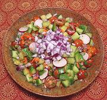

|
Cucumber SaladIndia, Odisha | ||||
| Makes: Effort: Sched: DoAhead: |
1-3/4 # ** 45 min Most |
A refreshing salad, probably often served by street vendors to attendees of the many religious events in Puri, on the east coast of Odisha. The temples account for 80% of the city's economy. | |||
|
1-1/4 1/2 ------- 4 2 2 1 5 1 ------- 2 1 1/4 1/3 1/3 ------- ar |
# T --- oz oz oz oz T --- T t t t t --- |
Cucumbers (1) Salt -- Vegies Onion red Radish, red Carrot Chili, green (2) Cherry Tomatoes Cilantro -- Dressing Lime Juice Cumin Seeds Chili Powder (4) Sugar Salt -- Serve With Lime Wedges |
Make: - (45 min)
|